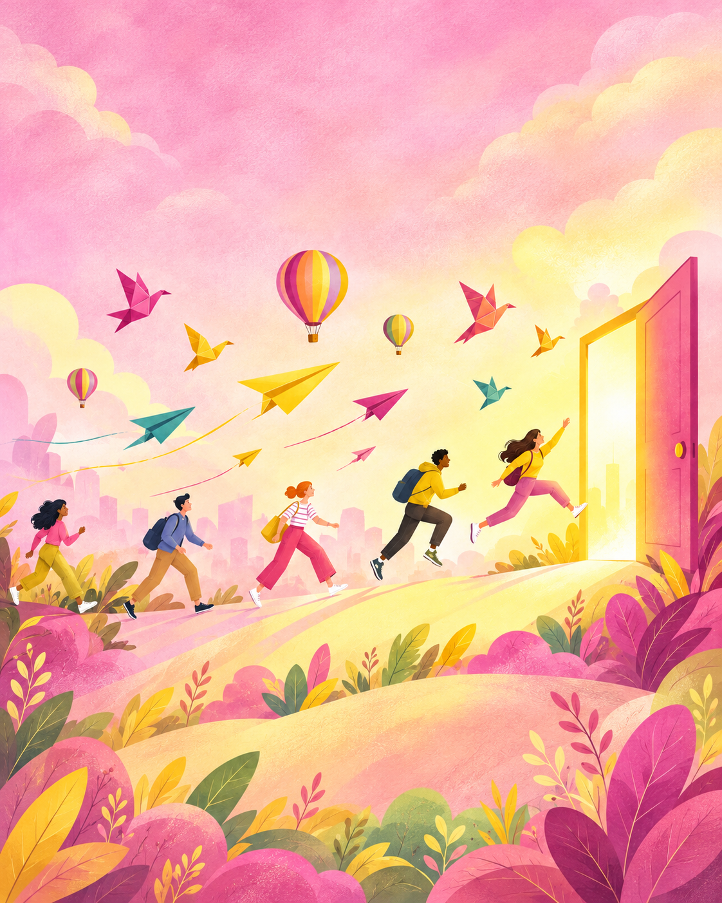
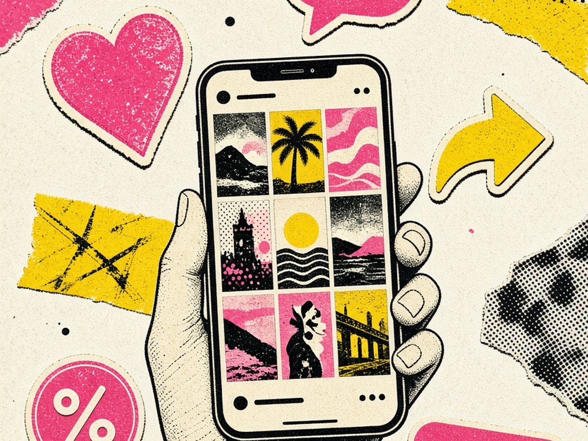
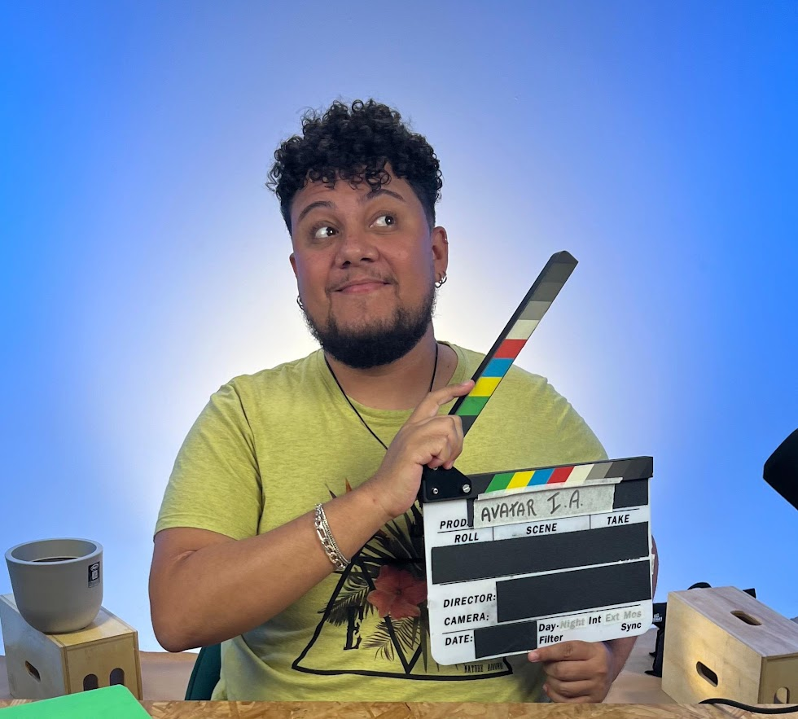
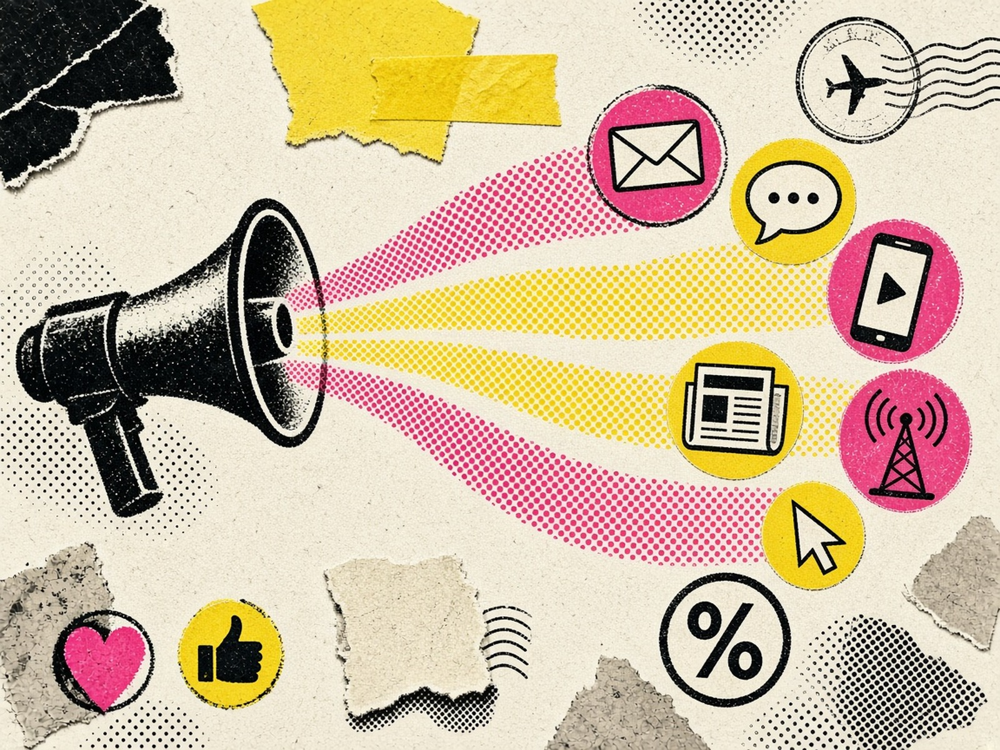

21 peças
Recruitment Marketing · Employer Branding · Conteúdo
Atrair talentos
Planos editoriais · Comunicação · E-mails

TALENTOS 01 / ATRAÇÃO
CONTEÚDO 02 / SOCIAL MEDIA
IT'S ME DIME · RJ
MULTIExperiências reais em recrutamento, conteúdo e experiência do cliente. Abra cada frente para ver o contexto e as responsabilidades.
Planos editoriais · Comunicação · E-mails
Estratégia · Conteúdo · Operação
CRM · Multicanal · CX
↗ Passe o cursor para mover · Clique para expandir
Com mais de 10 anos de experiência no mercado de trabalho, utilizo a comunicação, o marketing e o sucesso do cliente como veículos da minha carreira.
 DIME · RJ
DIME · RJ
Nos últimos anos, concentrei minha atuação em planejamento estratégico de conteúdo e comunicação, análise de dados, relacionamento, CRM, gestão de projetos, copywriting, employer branding, redação estratégica e social media.
Crio narrativas multicanal que conectam, orientadas por SEO, dados e storytelling, aproximando marcas e pessoas.
Domino ferramentas como Canva, HubSpot, RD Station, WordPress, Power BI, mLabs, Miro, Asana, Google Tasks e Google Workspace.
Resultados obtidos:
Mais de uma década entre comunicação, marketing, projetos e experiência do cliente.
Planejamento e execução de estratégias de Recruitment Marketing e Employer Branding para programas de estágio, trainee e jovem aprendiz. Desenvolvimento de campanhas multicanal, conteúdo, copywriting e e-mail marketing via RD Station, além de relacionamento com clientes e acompanhamento de KPIs. Atuação em programas de Bradesco Seguros, Nestlé, Vivo, Serasa Experian e Atvos.
Social Media · Mar — Jun 2026: estratégia de conteúdo para LinkedIn, copy, calendário editorial, revisão e SEO.
Projetos e Planejamento · Out 2025 — Mar 2026: gestão de projetos audiovisuais, equipe multidisciplinar, processos, prioridades e entregas.
Suporte à gestão de projetos audiovisuais e produções para eventos corporativos e sociais: cronogramas, logística, acompanhamento de equipes, demandas e comunicação com stakeholders. Uso de Miro, Google Sheets e Trello.
Assistente de Marketing · Out — Dez 2024: community management, conteúdo, comunicação multicanal e engajamento.
Consultor de Atendimento Jr · Ago 2022 — Set 2024 (Marketing): CRM, campanhas HubSpot, réguas de comunicação, conteúdo e nutrição de leads.
Customer Success · Abr 2021 — Ago 2022: gestão de carteira, atendimento consultivo e experiência do cliente.
Comercial · Set 2020 — Mar 2021: inside sales, prospecção, conversão e jornada do cliente.
Formação em gestão e pessoas, com especialização atual em comunicação digital e inteligência de negócios.
Buscando oportunidades em Marketing, Sucesso e Experiência do Cliente, Redação e Copywriting. Fale comigo por e-mail, WhatsApp ou LinkedIn.
Rio de Janeiro, RJ · Disponível para viagens e mudança.